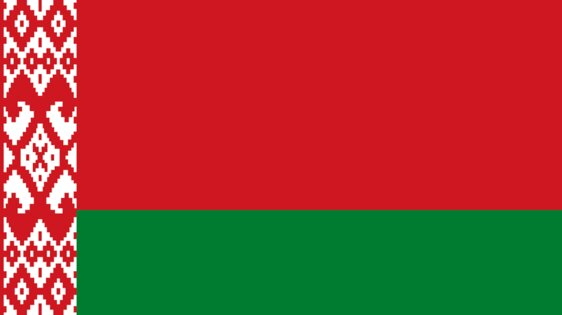

Государственная символика
Государственная символика Республики Беларусь
Как суверенное государство Республика Беларусь имеет свои государственные символы - Государственный флаг, Государственный герб, Государственный гимн.
Начиная с 1917 года в Беларуси неоднократно менялись Государственный флаг и Государственный герб. Однако, несмотря на имеющиеся отличия, все варианты государственной символики имели схожую основу, что позволяет говорить об их исторической преемственности.
Государственный флаг Республики Беларусь

Государственный флаг Республики Беларусь является символом государственного суверенитета Республики Беларусь, представляет собой прямоугольное полотнище, состоящее из двух горизонтально расположенных цветных полос: верхней - красного цвета в 2/3 ширины флага и нижней - зеленого цвета в 1/3.
Около древка вертикально расположен белорусский национальный орнамент красного цвета на белом поле, составляющий 1/9 длины флага. Отношение ширины флага к его длине - 1:2. Флаг крепится на древке (флагштоке), которое окрашивается в золотистый (охра) цвет.
Государственный флаг постоянно поднят на зданиях органов власти и некоторых государственных учреждений, устанавливается в служебных кабинетах руководителей данных органов (учреждений), в школах, на избирательных участках, вывешивается во время различных торжественных мероприятий.
При одновременном поднятии или установлении Государственного флага Республики Беларусь и флага другого государства Государственный флаг Республики Беларусь должен быть поднят или установлен с правой стороны, а флаг другого государства - с левой, если стать лицом к ним.
Граждане могут вывешивать Государственный флаг как внутри, так и снаружи помещений во время народных, трудовых, семейных праздников и в другие памятные дни. При этом обязательным условием является соблюдение уважения к Государственному флагу как символу государства. Государственный флаг Республики Беларусь, изготовленный в настольном варианте, может быть установлен в помещениях, используемых организациями и гражданами Республики Беларусь.
Государственный герб Республики Беларусь

Государственный герб Республики Беларусь является символом государственного суверенитета Республики Беларусь. Он представляет собой размещенный в серебряном поле золотой контур Государственной границы Республики Беларусь, наложенный на золотые лучи восходящего над земным шаром солнца. Вверху поля находится пятиконечная красная звезда. Герб обрамлен венком из золотых колосьев, переплетенных справа цветками клевера, слева - цветками льна. Венок трижды перевит с каждой стороны красно-зеленой лентой, в средней части которой в основании Государственного герба Республики Беларусь в две строки начертаны золотом слова "Рэспубліка Беларусь".
Изображение Государственного герба размещается на зданиях органов власти и ряда государственных учреждений, внутри служебных кабинетов их руководителей, а также на печатях данных органов, на монетах, паспортах граждан Республики Беларусь. В отличие от Государственного флага, Государственный герб имеет более официальное значение, поэтому не предусматривается возможность его свободного использования гражданами. В частности, запрещается его размещение на визитных карточках лиц, не являющихся государственными служащими.
При одновременном размещении Государственного герба Республики Беларусь и герба административно-территориальной единицы либо территориальной единицы Республики Беларусь Государственный герб Республики Беларусь должен располагаться с левой стороны от другого герба, если стать лицом к ним. При одновременном размещении нечетного числа гербов Государственный герб Республики Беларусь должен располагаться в центре, а при размещении четного числа гербов (более двух) - левее центра.
Государственный гимн Республики Беларусь
Государственный гимн Республики Беларусь представляет собой музыкально-поэтическое произведение, исполняемое в торжественных случаях, перечень которых закрепляется в законодательстве.
Государственный гимн имеет своих авторов - музыку к нему написал белорусский композитор Н. Ф. Соколовский, а слова - белорусские поэты М. Н. Климкович и В. И. Каризна.
Государственный гимн исполняется в начале и в ряде случаев в окончании важных государственных и общественных событий, в том числе при вступлении Президента Республики Беларусь в должность – после принесения им Присяги.
Граждане могут исполнять (прослушивать) Государственный гимн во время народных, трудовых, семейных праздников и других торжественных мероприятий при обеспечении необходимого уважения к нему.
В качестве знака выражения уважения к Государственному гимну при его официальном исполнении присутствующие слушают его стоя (мужчины - без головных уборов, военнослужащие, иные лица, для которых предусмотрено ношение форменной одежды, - в соответствии с законодательством).
Мы, беларусы – мірныя людзі,
Сэрцам адданыя роднай зямлі,
Шчыра сябруем, сілы гартуем
Мы ў працавітай, вольнай сям’і.
Слаўся, зямлі нашай светлае імя,
Слаўся, народаў братэрскі саюз!
Наша любімая маці-Радзіма,
Вечна жыві і квітней, Беларусь!
Разам з братамі мужна вякамі
Мы баранілі родны парог,
У бітвах за волю, бітвах за долю
Свой здабывалі сцяг перамог!
Слаўся, зямлі нашай светлае імя,
Слаўся, народаў братэрскі саюз!
Наша любімая маці-Радзіма,
Вечна жыві і квітней, Беларусь!
Дружба народаў – сіла народаў –
Наш запаветны, сонечны шлях.
Горда ж узвіся ў ясныя высі,
Сцяг пераможны – радасці сцяг!
Слаўся, зямлі нашай светлае імя,
Слаўся, народаў братэрскі саюз!
Наша любімая маці-Радзіма,
Вечна жыві і квітней, Беларусь!